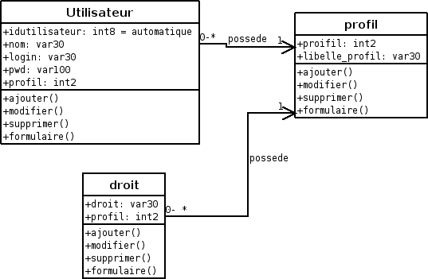

S O M M A I R E
Utilisateur
Cette table permet d'attribuer un mot de passe et un profil à un utilisateur.
Profil
Le profil permet de déterminer les droits d'accès de chaque utilisateur.
Chaque utilisateur ayant les droits dont le
profil est inférieur ou égal au sien.
Mot de passe
Le mot de passe peut être changé par l'utilisateur: Changement du mot de passe
Déconnexion
En cas de non utilisation du logiciel pendant un moment, la session peut être perdue.
Il faut donc se reconnecter
Diagramme utilisateur
